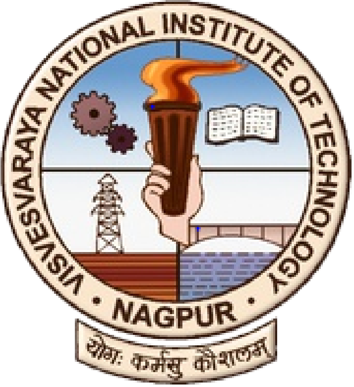

Research Experience & Subsequent Projects
|
|
Summer Research Intern @ RWTH Aachen University,
Germany
|
|
|
Research Assistant @ Indian Institute of Technology,
Kharagpur
|
|  |
Research Intern @ Visvesvaraya National Institute of
Technology, Nagpur
|